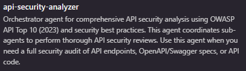
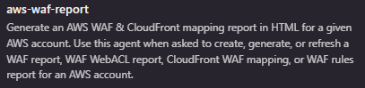

Security Compliance Automation
using 

KIRO melakukan login SSO dan melakukan pengecekan seluruh Account di AWS (jika multiple account) dengan profil tertentu.
Pengumpulan hasil temuan yang ada di Security Hub CSPM yang memiliki banyak temuan yang menyebabkan terjadi pagination.
Melakukan custom WebACL Rules untuk menyesuaikan dengan kebutuhan bisnis.
Mempercepat proses prompting berulang dengan workspace yang sudah dikonfigurasi.
Automasi penuh dengan mode autopilot untuk menjalankan task secara berurutan.
Example Finding: [EC2.19] Security groups should not allow unrestricted access to ports with high risk

Workspace Structure

Steering Files Configuration
Akses read-only ke seluruh AWS accounts melalui Organization dengan SecurityAudit role. Aman untuk audit tanpa risiko modifikasi.
Workspace dengan steering files, MCP config, dan agents yang sudah disiapkan untuk security compliance tasks.
Mode autopilot di Kiro yang secara otomatis menyetujui safe operations tanpa perlu konfirmasi manual.
Security Compliance Automation using KIRO